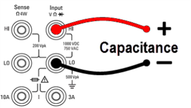
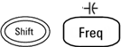

This section describes how to configure capacitance measurements from the front panel.
Step 1: Configure the test leads as shown.

Step 2: Press

on the front panel.Step 3: To null–out the test lead capacitance:
Step 4: Press Range to select a range for the measurement. You can also use the [+], [-], and [Range] keys on the front panel to select the range. (Auto (autorange) automatically selects the range for the measurement based on the input. Autoranging is convenient, but it results in slower measurements than using a manual range. Autoranging goes down a range at less than 10% of range and up a range at greater than 120% of range. For capacitance measurements only, when autorange is off, the instrument does not report an overload for readings greater than 120% of range. Overload only occurs when the algorithm times out because the applied capacitance is too large for the algorithm to measure. If you apply a DC voltage or a short to the input terminals in capacitance measurement mode, the instrument reports an overload.